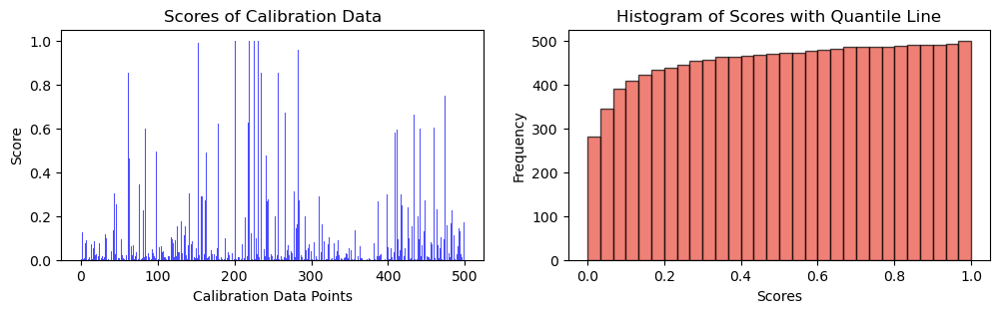
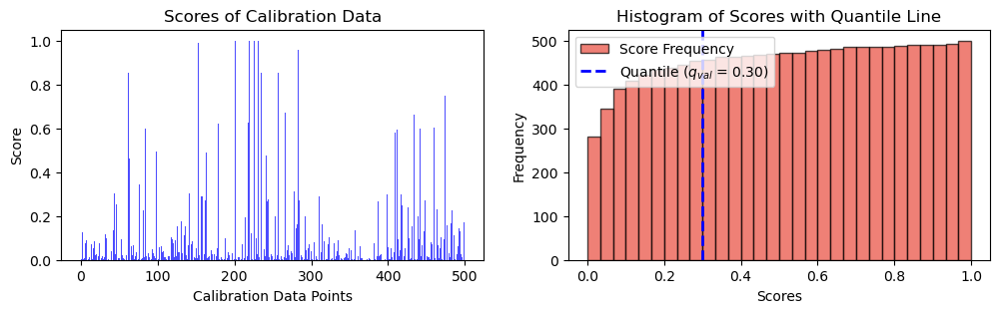
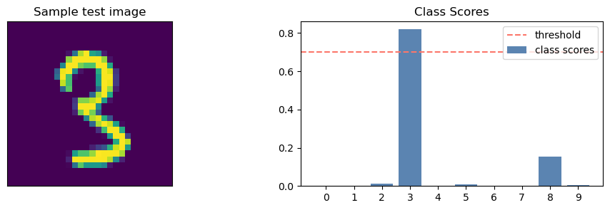

import torch
import torch.nn as nn
import numpy as np
import matplotlib.pyplot as plt
from tqdm.auto import trange, tqdm
import torchvision.datasets as datasets
import torchvision.transforms as transforms
torch.manual_seed(42)
np.random.seed(42)In this post I am implementing Conformal Prediction for Regression
Conformal Prediction for Classification
Conformal Prediction is a versatile framework applicable to various scenarios, including classification tasks. The algorithm’s adaptation for classification is outlined as follows:
Heuristic Notion of Uncertainty: Start with a pre-trained model that generates predictions for input data. The model should possess a heuristic notion of uncertainty that represents its prediction confidence.
Conformal Scores Calculation: Compute the conformal scores by applying the trained model to the calibration dataset. The socring function is
\[s_i=1-\hat{\pi}_{x_i}(y_i)\]
def get_data():
train_dataset = datasets.MNIST(root='blogs/posts/data', train=True, download=True)
test_dataset = datasets.MNIST(root='blogs/posts/data', train=False, download=True)
X_train, y_train = train_dataset.data.float() / 255.0, train_dataset.targets
X_test, y_test = test_dataset.data.float() / 255.0, test_dataset.targets
X_train = X_train.view(-1, 28*28)
X_test = X_test.view(-1, 28*28)
X_calib, X_train = X_train[59500:], X_train[:59500]
y_calib, y_train = y_train[59500:], y_train[:59500]
return X_train, y_train, X_test, y_test, X_calib, y_calibX_train, y_train, X_test, y_test, X_cal, y_cal = get_data()class MLP(nn.Module):
def __init__(self):
super(MLP, self).__init__()
self.fc1 = nn.Linear(784, 32)
self.relu = nn.ReLU()
self.sigmoid1 = nn.Sigmoid()
self.fc2 = nn.Linear(32, 10)
def forward(self, x):
x = self.relu(self.fc1(x))
x = self.fc2(x)
return xdef train(_net, _train_data):
X_train, y_train = _train_data
train_dataset = torch.utils.data.TensorDataset(X_train, y_train)
train_loader = torch.utils.data.DataLoader(train_dataset, batch_size=64, shuffle=True)
criterion = nn.CrossEntropyLoss()
optimizer = torch.optim.Adam(_net.parameters(), lr=0.001)
num_epochs = 1
for epoch in range(num_epochs):
_net.train()
running_loss = 0.0
running_accuracy = 0.0
for batch_idx, (inputs, targets) in enumerate(train_loader):
optimizer.zero_grad()
outputs = _net(inputs)
loss = criterion(outputs, targets)
loss.backward()
optimizer.step()
running_loss += loss.item()
# running_accuracy += accuracy(outputs, targets)
return _netnet = MLP()
net = train(net, (X_train, y_train))y_test_pred = torch.argmax(net(X_test), dim = 1)
accuracy = (y_test_pred == y_test).sum()/len(y_test)
print(f"accuracy : {accuracy}")accuracy : 0.9197999835014343cal_smx = torch.functional.F.softmax(net(X_calib), dim=1).detach().numpy()
scores = 1 - cal_smx[np.arange(len(X_calib)), y_calib.numpy()]fig, ax = plt.subplots(1, 2, figsize=(12, 3))
# Plot scores of calibration data
ax[0].bar(np.arange(len(scores)), height = scores, alpha = 0.7, color = 'b')
ax[0].set_ylabel("Score")
ax[0].set_xlabel("Calibration Data Points")
ax[0].set_title("Scores of Calibration Data")
# Plot the histogram
n, bins, _ = ax[1].hist(scores, bins=30, alpha=0.7, cumulative = True, color='#E94B3CFF', edgecolor='black', label='Score Frequency')
ax[1].set_xlabel('Scores')
ax[1].set_ylabel('Frequency')
ax[1].set_title('Histogram of Scores with Quantile Line')
plt.show(),
(None,)alpha = 0.1
n_cal = 500\[q = \frac{{\lceil (1 - \alpha) \cdot (n + 1) \rceil}}{{n}}\]
q_val = np.ceil((1 - alpha) * (n_cal + 1)) / n_cal
print(f"q_val: {q_val}")q_val: 0.902q = np.quantile(scores, q_val, method="higher")
fig, ax = plt.subplots(1, 2, figsize=(12, 3))
# Plot scores of calibration data
ax[0].bar(np.arange(len(scores)), height = scores, alpha = 0.7, color = 'b')
ax[0].set_ylabel("Score")
ax[0].set_xlabel("Calibration Data Points")
ax[0].set_title("Scores of Calibration Data")
# Plot the histogram
n, bins, _ = ax[1].hist(scores, bins=30, alpha=0.7, cumulative = True, color='#E94B3CFF', edgecolor='black', label='Score Frequency')
# Plot the vertical line at the quantile
# q_x = np.quantile(scores, q)
ax[1].axvline(q, color='b', linestyle='dashed', linewidth=2, label=r"Quantile (${q_{val}}$ = " + str(("{:.2f}")).format(q) + ")")
ax[1].set_xlabel('Scores')
ax[1].set_ylabel('Frequency')
ax[1].set_title('Histogram of Scores with Quantile Line')
plt.legend()
plt.show(),
(None,)idxs = 976def get_test_preds_and_smx(X_test, index, pred_sets, net, q, alpha):
test_smx = nn.functional.softmax(net(X_test), dim=1).detach().numpy()
sample_smx = test_smx[index]
fig, axs = plt.subplots(1, 2, figsize=(12, 3))
axs[0].imshow(X_test[index].reshape(28,28).numpy())
axs[0].set_title("Sample test image")
axs[0].set_xticks([])
axs[0].set_yticks([])
axs[1].bar(range(10), sample_smx, label="class scores", color = '#5B84B1FF')
axs[1].set_xticks(range(10))
axs[1].set_xticklabels([class_label(i) for i in range(10)])
axs[1].axhline(y=1 - q, label='threshold', color="#FC766AFF", linestyle='dashed')
axs[1].legend(loc=1)
axs[1].set_title("Class Scores")
pred_set = pred_sets[index].nonzero()[0].tolist()
return fig, axs, pred_set, get_pred_str(pred_set)def class_label(i):
labels = {0: "0", 1: "1", 2: "2", 3: "3", 4: "4",
5: "5", 6: "6", 7: "7", 8: "8", 9: "9"}
return labels[i]def get_pred_str(pred):
pred_str = "{"
for i in pred:
pred_str += class_label(i) + ', ' # Use comma instead of space
pred_str = pred_str.rstrip(', ') + "}" # Remove the trailing comma and add closing curly brace
return pred_strdef get_pred_sets(net, test_data, q, alpha):
X_test, y_test = test_data
test_smx = nn.functional.softmax(net(X_test), dim=1).detach().numpy()
pred_sets = test_smx >= (1 - q)
return pred_setspred_sets = get_pred_sets(net, (X_test, y_test), q, alpha)fig, ax, pred, pred_str = get_test_preds_and_smx(X_test, idxs, pred_sets, net, q, alpha)
print(pred_str){3}